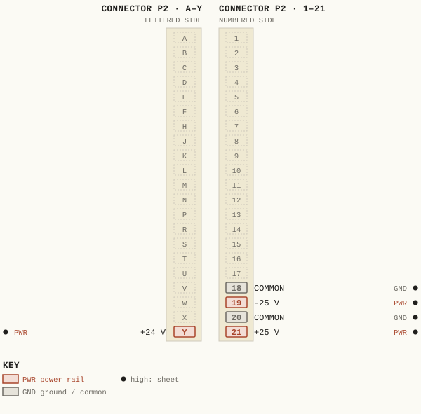
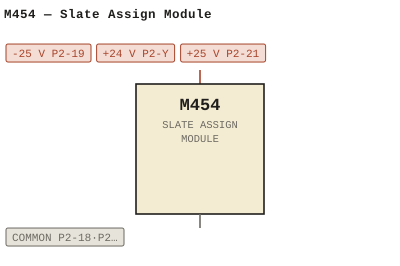

M454 — Slate Assign Module
| Type | module |
| Category | ROUTING |
| Try it | simulator & front panel · download package (zip) |
| Earliest dated evidence | 1974|7 — title-block date |
| Evidence | "DATE Nov 74" in PUBLIC/Manuals + tech DOCUMENTS/Modules/M454 - Slate Assign Module/M454 - P005 - B-454-04-001.jpg |
| Confidence | high |
| All years found | 1974|7 |
| Folder | DOCUMENTS/RECENT SCANS/WBSps.ca 20210317 - Small 11X17 drawings |
| Folder | Modules/ROUTING/M454 |
Connections
What it is made of and what it is part of.
Pictures


M454.pinout.svg

M454.connections.svg 1974 - M454 - 454-04-001 - PSSMOO CKO USD.jpg
1974 - M454 - 454-04-001 - PSSMOO CKO USD.jpg 1974 - M454 - 454-02-001 - DRAWN ENE.jpg
1974 - M454 - 454-02-001 - DRAWN ENE.jpg 1974 - M454 - 454-04-003 - SLATE ASS IGNMENT MODULE.jpg
1974 - M454 - 454-04-003 - SLATE ASS IGNMENT MODULE.jpg 1974 - M454 - P001 - Title Page.jpg
1974 - M454 - P001 - Title Page.jpg 1974 - M454 - P002 - 1-1.jpg
1974 - M454 - P002 - 1-1.jpg 1974 - M454 - P003 - 1-2.jpg
1974 - M454 - P003 - 1-2.jpg 1974 - M454 - Slate Module.jpg
1974 - M454 - Slate Module.jpg 1974 - M454 - vint P1.jpg
1974 - M454 - vint P1.jpg 1974 - M454 - vint P2.jpg
1974 - M454 - vint P2.jpg 1974 - M454 - vint P3.jpg
1974 - M454 - vint P3.jpg 1974 - M454 - wbsps - module - m454 - slate module_small.jpg
1974 - M454 - wbsps - module - m454 - slate module_small.jpg 1982 - 454-02-001 - SLATE ASSIGN MODULE - DRN D.N. NOV-82 - ISS 2.png
1982 - 454-02-001 - SLATE ASSIGN MODULE - DRN D.N. NOV-82 - ISS 2.png 19xx - DOC - SLATE ASSIGN MODULE.png
19xx - DOC - SLATE ASSIGN MODULE.pngPrice history
| Year | Kind | Price | Listed as | Effective | Source |
|---|---|---|---|---|---|
| 2005|38 | used market value | 10.00 | M454 Slate Assign | wbsps - website ARCHIVE/WBSPS 2008/ARCHIVE/old website/PriceGuide.htm | |
| 2006|39 | used market value | 10.00 | M454 Slate Assign | wbsps - website ARCHIVE/WBSPS 2008/ARCHIVE/jan 2006 shell/priceguide.htm |
Pinout & connections
Each contact as its own documents name it: 5 named (5 high confidence). An empty slot is a contact no page names. Hover a contact for its source; the table under the drawing lists them.
pinout (SVG) · connections (SVG) · pins (JSON)
Pin evidence — 5 contacts
| Pin | Signal | Kind | Confidence | Read from | Source |
|---|---|---|---|---|---|
| P2-18 | COMMON | ground / common | high | rto-144 | M454.rto144.json, p. 1 |
| P2-19 | -25 V | power rail | high | rto-144 | M454.rto144.json, p. 1 |
| P2-20 | COMMON also: COMMON (rto-144) | ground / common | high | rto-144 | M454.rto144.json, p. 1 |
| P2-Y | +24 V | power rail | high | rto-144 | M454.rto144.json, p. 1 |
| P2-21 | +25 V | power rail | high | rto-144 | M454.rto144.json, p. 1 |
Dates found in the documents
| Year | Kind | Text | File |
|---|---|---|---|
| 1974|7 | title-block date | DATE Nov 74 |
1974 - M454 - 454-04-001 - PSSMOO CKO USD.jpg |
Physical manual inventory
| Item | Location | Status | Scanned |
|---|---|---|---|
| M454 | Recently scanned and stiched by WB | ||
| M454 - Slate Assign Module | PDF - Already scanned |
Documents (2)
| Year | File | |
|---|---|---|
| 1974|7 | 1974 - M454 - Slate Assign Module (2).pdf | note |
| 1974|7 | 1974 - M454 - Slate Assign Module.pdf | note |
Photos & scans (14)


Named in other drawings & documents (1)
| File | Page |
|---|---|
| 19xx - RTO-144 - Module RTO-144 Jumper calculator.xlsx | 1 |
Drawings (6)
Each scan with its trace laid over it: the slider runs from the scan to the vector drawing. Click one to see it large and save it as SVG, DXF, KiCad, PDF or PowerPoint.
Toneislate Control Com Slate Injviewer
M454 / SLATE ASSIGN MODULEviewer
Slate Ass Ignment Moduleviewer
Slate Tone Ssnooicko Lsldoaviewer
Slate Assign Moduleviewer
Read from the drawing title blocks.
| Drawing | Title | Date | Drawn by | Checked by | Iss. | Source |
|---|---|---|---|---|---|---|
| B 454-02-001 | M454 / SLATE ASSIGN MODULE | 1982|15 | 2 | file | ||
| 454-04-001 | Pssmoo Cko Usd | 2024|57 | file | |||
| — | Slate Assign Module | DOV | 2 | file | ||
| 454-02-001 | Drawn Ene | 3 | file | |||
| 454-04-003 | Slate Ass Ignment Module | LAP | A | file | ||
| 454-04-061 | Slate Tone Ahopkcko Usoh | file p.5 |